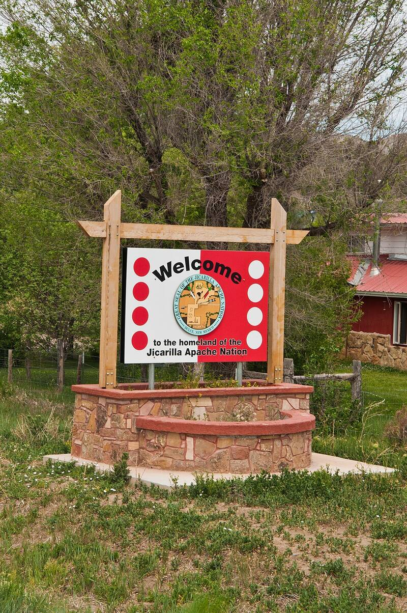

Dulce Base (alleged)
Archuleta Mesa, near Dulce, New Mexico

UNVERIFIED: supposed underground alien and human base inside Archuleta Mesa on the Jicarilla Apache Nation. The story began with Paul Bennewitz in the early 1980s, partly built on disinformation fed to him by Air Force agents, and grew through later retellings. No evidence of a base has ever surfaced. 1
Open in the interactive Watcher
Related
Sources
- Dulce Base Wikipedia